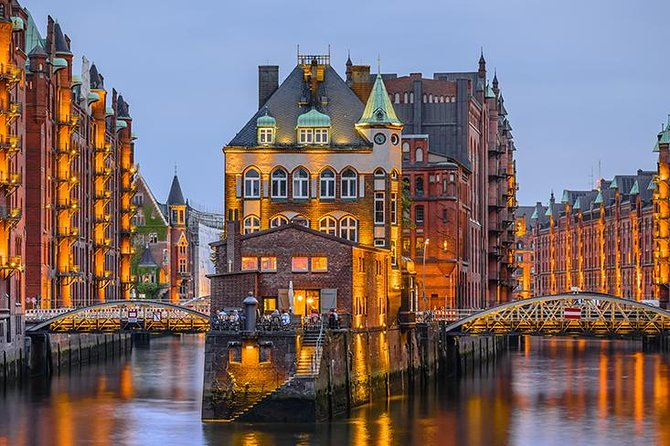
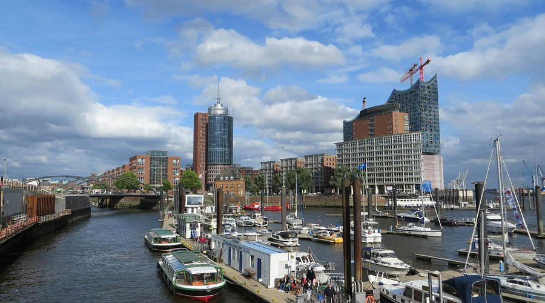

About Hamburg
Hamburg is Germany's second-largest city and one of its most important ports. Known as the "Gateway to the World," it has a proud maritime heritage and a lively, cosmopolitan atmosphere. The city sits on the Elbe River, just over 100 km from the North Sea.
Hamburg is famous for the Speicherstadt — the world's largest warehouse district, a UNESCO World Heritage Site — as well as the HafenCity, one of Europe's largest urban redevelopment projects. The city also has a thriving music and arts scene, and was the city where The Beatles first gained fame in the early 1960s.

Top Attractions

Speicherstadt
The world's largest historic warehouse district, now home to museums, design studios, and cafes.

Miniatur Wunderland
The world's largest model railway exhibition — a magical experience for visitors of all ages.

Hamburg Harbour
Take a harbour boat tour along the Elbe to see one of Europe's busiest and most scenic ports.
Things to Do in Hamburg
- Explore the Speicherstadt and its many unique museums
- Visit Miniatur Wunderland — the world's largest model railway
- Take a harbour cruise on the Elbe River
- Walk through the beautiful Alster Lakes at the city center
- Discover the lively Reeperbahn entertainment district
- Visit the Elbphilharmonie — Hamburg's stunning concert hall
- Explore the fish market (Fischmarkt) on Sunday mornings